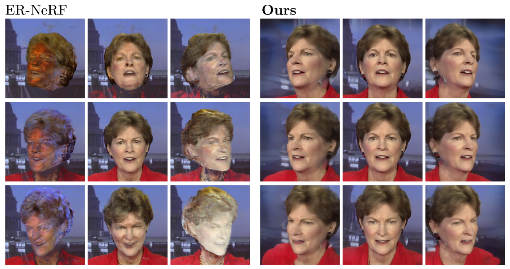

The left (ER-NeRF) and the right (Talk3D) show the results of the talking head rendered from various camera viewpoints.
Leveraging 3D generative prior, our Talk3D predicts a plausible geometry from a given monocular video dataset.
The figure shows the robustness in generating high-fidelity talking portrait videos even at unseen head poses during training.
Abstract
Recent methods for audio-driven talking head synthesis often optimize neural radiance fields (NeRF) on
a monocular talking portrait video, leveraging its capability to render high-fidelity and 3D-consistent
novel-view frames. However, they often struggle to reconstruct complete face geometry due to the absence of
comprehensive 3D information in the monocular videos. In this paper, we introduce a novel audio-driven
talking head synthesis framework, called Talk3D, that can faithfully reconstruct its plausible facial geometries
by effectively adopting the pre-trained 3D-aware generative prior.
Given the personalized 3D generative model, we use our novel audio-guided attention U-Net architecture
that predicts the dynamic face variations in the NeRF space driven by audio. Furthermore, our model is
modulated by various conditioning tokens which effectively disentangle scene variations unrelated to audio
features. Compared to existing methods, our method excels in generating realistic facial geometries even
under extreme head poses. We also conduct extensive experiments showing our approach surpasses state-of-the-art
benchmarks in terms of both quantitative and qualitative evaluations.
Qualitative Results
Novel-view Settings
Cross-driven Settings
Quantitative Results
Novel-view Settings

Self-driven Settings

Cross-driven Settings

User Study

Citation
If you find our work useful in your research, please cite our work as:
Acknowledgements
The website template was borrowed from Michaël Gharbi.